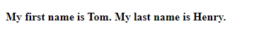

Django Templates:
In the previous section, we have successfully created a View function and display an Http response on the browser.
This section will guide you, how you can create a HTML page in Django (also called template) and use that template to display Static as well as Dynamic content.
In the app the templating engine which we are using is Jinja2. There are some other third
party packages, but we will use Jinja2 for its smooth and easy-to-use availability. Now for our todo_app we need to create a templates' directory in base todo folder. This folder will cantain all HTML files.
Let create a new file
index.html in todo/templates directory. (The directory structure will look-alike below)
todo/ -templates/
index.html
-todo_app/
migrations/
__init__.py
__init__.py
admin.py
apps.py
models.py
tests.py
views.py
-todo/
__init__.py
settings.py
urls.py
asgi.py
wsgi.py
-manage.py
Plain Text: STATIC Content
Plain Text
Open index.html and fill with below HTML basic code:
todo/templates/index.html
<!DOCTYPE html>
<html lang="en">
<head>
<meta charset="UTF-8">
<title>Index</title>
</head>
<body>
<h4>My first name is John. My last name is Doe.</h4>
</body>
</html>
As our HTML code is ready so now open views.py and write index() function like below:
todo/todo_app/views.py
def index(request):
return render(request, 'index.html')
Make sure you have added the render at the top of the Views.py file, otherwise it will show error.
from django.shortcuts import render
As you can see we passed the newly created template index.html as parameter to render(). Now you will see below results, when open browser at http://127.0.0.1:8000/todo_app/
Browser: Static Response (http://127.0.0.1:8000/todo_app/)
Variable: DYNAMIC Content
For Dynamic content on webpage we use context and pass it in view. A context is dictionary object passed to template consisting of key (variable name) and value (variable value). To have a clear understanding, update the index.html code like below:
todo/templates/index.html
<!DOCTYPE html>
<html lang="en">
<head>
<meta charset="UTF-8">
<title>Index</title>
</head>
<body>
<h4>My first name is {{ first_name }}. My last name is {{ last_name }}.</h4>
</body>
</html>
In above code we have added two variable first_name and last_name. Now we only need to pass these two variables as context> in views.py.
Now open the views.py and update the code for index() function like below:
todo/todo_app/views.py
def index(request):
context = {
'first_name' : 'Tom',
'last_name' : 'Henry'
}
return render(request, 'index.html', context)
Django track any string as variable if it is surrounded by {{ }}. Like in above-example first_name and last_name> and replace them with the value provided in view's function.
As you can see we passed the newly created template index.html as parameter to render(). Now you will see below results, when open browser at http://127.0.0.1:8000/todo_app/
Browser: Dynamic Response (http://127.0.0.1:8000/todo_app/)
In the above example the content is generated dynamically.Both the names first_name Tom and last_name Henry are passed from views.py.
Now lets create an example related to our todo_app. We are assuming that we need to show Category list in our page. So first change the index.html code like below:
<h4>Awesome Todo list</h4>
<div>
<ul>
{% for category in categories %}
<li>
<a href="{{ category.id }}/">{{ category.name }}</a>
</li>
{% endfor %}
</ul>
</div>
Now as in template, we are listing the Category.id and Category.name. We need to fetch all Category objects then pass them as context like we did in last example.
So our index() function will view like below:
from django.shortcuts import render
from .models import Category
def index(request):
list_of_category_objects = Category.objects.all()
context = {
'categories': list_of_category_objects
}
return render(request,'index.html', context)
Now move to browser at http://127.0.0.1:8000/todo_app/ see below results.